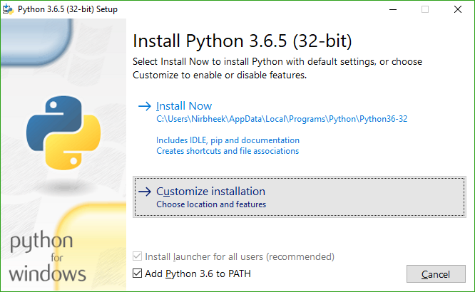
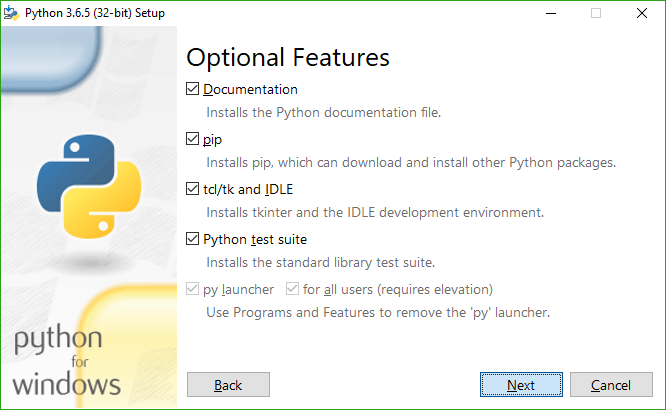
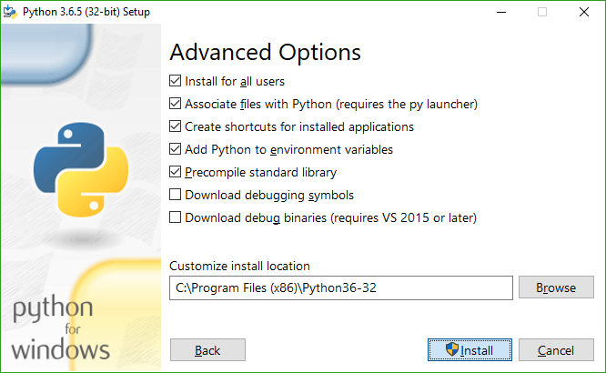

Getting meson
Meson is implemented in Python 3, and requires 3.5 or newer. If your operating system provides a package manager, you should install it with that. For platforms that don't have a package manager, you need to download it from Python's home page. See below for platform-specific Python3 quirks.
Downloading Meson
Meson releases can be downloaded from the GitHub release page, and you can
run ./meson.py from inside a release or the git repository itself without
doing anything special.
On Windows, if you did not install Python with the installer options that make
Python scripts executable, you will have to run python /path/to/meson.py,
where python is Python 3.5 or newer.
The newest development code can be obtained directly from Git, and we strive to ensure that it will always be working and usable. All commits go through a pull-request process that runs CI and tests several platforms.
Installing Meson with pip
Meson is available in the Python Package Index and can be installed with
pip3 install meson which requires root and will install it system-wide.
Alternatively, you can use pip3 install --user meson which will install it
for your user and does not require any special privileges. This will install
the package in ~/.local/, so you will have to add ~/.local/bin to your
PATH.
Installing Meson and Ninja with the MSI installer
We provide an MSI installer on the GitHub release page that can be used to install both Meson and Ninja at once for Windows. It also contains an embedded copy of Python, so scripts that use the Python module and do not have any external dependencies will continue to work as expected.
Please note that this is a new feature, so bug reports are expected and welcome!
Dependencies
In the most common case, you will need the Ninja executable for using the
ninja backend, which is the default in Meson. This backend can be used on all
platforms and with all toolchains, including GCC, Clang, Visual Studio, MinGW,
ICC, ARMCC, etc.
You can use the version provided by your package manager if possible, otherwise download the binary executable from the Ninja project's release page.
If you will only use the Visual Studio backend (--backend=vs) to generate
Visual Studio solutions on Windows or the XCode backend (--backend=xcode) to
generate XCode projects on macOS, you do not need Ninja.
Platform-specific install quirks
Windows Python3 quirks
When installing Python 3, it is highly recommended (but not required) that you select the installer options as follows:
  
With this, you will have python and pip in PATH, and you can install
Meson with pip. You will also be able to directly run meson in any shell on
Windows instead of having to run py -3 with the full path to the meson.py
script.
MSYS2 Python3 quirks
If you are using MSYS2 on Windows as your development environment, please make
sure that you do not use the msys/python package to provide Python 3. Use
either mingw32/mingw-w64-i686-python3 or mingw64/mingw-w64-x86_64-python3
depending on which MinGW target you are building for.
The results of the search are